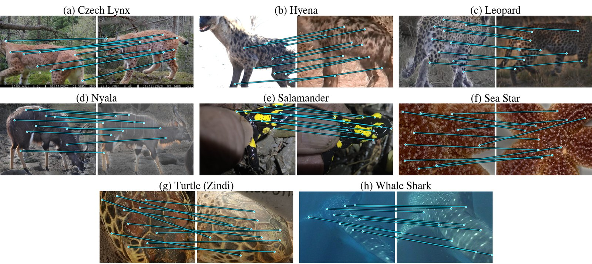

Preprint available online
WildMatch: Weakly Supervised Image Matcher Adaptation for Wildlife Re-Identification¶
Adapting a pretrained keypoint matcher to a wildlife domain with identity labels only, without keypoint or correspondence annotation.
* Equal contribution · 1 Faculty of Mathematics and Computer Science, Jagiellonian University, Kraków · 2 Doctoral School of Exact and Natural Sciences, Jagiellonian University, Kraków · 3 Jagiellonian Center for Artificial Intelligence, Kraków · 4 NASK National Research Institute, Warsaw · 5 Institute of Environmental Sciences, Faculty of Biology, Jagiellonian University, Kraków
In 78 seconds¶
Abstract¶
Individual animal re-identification from camera-trap imagery is an instance retrieval problem central to non-invasive wildlife monitoring: a query image must retrieve the correct individual from a reference set of known animals. This requires computer vision models to recognize distinctive local patterns in fur, skin, or other visual markings. Current approaches either learn global embeddings as a classification problem, requiring many labeled images per individual while largely ignoring local evidence, or apply off-the-shelf, domain-agnostic image matchers. Although such matchers are pretrained on large and diverse image collections, adapting them to wildlife imagery is challenging because available datasets are small and lack correspondence-level annotations. We study weakly supervised adaptation of a pretrained keypoint matcher using only identity labels, without keypoint-level or geometric correspondence ground truth. We mine informative image pairs with the pretrained matcher, derive weak positive and negative supervision from identity agreement, and contrastively fine-tune the matching network to strengthen correspondences for same-identity pairs and suppress them for different identities. Across open-source wildlife re-identification datasets, our approach improves accuracy over off-the-shelf matchers and a state-of-the-art local–global fusion method. Under an open-world protocol with held-out individuals, it learns a transferable correspondence prior rather than memorizing training identities. To our knowledge, this is the first study of matcher-level, identity-supervised adaptation for animal re-identification. Our method enables data-efficient specialization of image matching models to wildlife domains using identity annotations already available in typical monitoring datasets.
Contributions¶
- WildMatch, a weakly supervised procedure that adapts a pretrained image matcher to a wildlife domain using only the identity labels of the reference database.
- Consistent gains over off-the-shelf matchers and a local-global fusion baseline on eight wildlife re-identification datasets, across candidate budgets.
- Transfer to unseen individuals, and an analysis of where in the matching pipeline identity supervision should be applied.
See the change on real photos in the before and after demo: the same query and gallery pair scored by the default matcher and by WildMatch, with every correspondence drawn. Four more interactive views follow it.
How it works¶
Identity labels only¶
The reference database already names each individual. WildMatch uses nothing else: no keypoint or correspondence annotation.
Mined pairs¶
The pretrained matcher scores training pairs once. High-scoring same-identity pairs become positives, high-scoring other-identity pairs hard negatives.
Adapted matcher¶
A triplet margin loss on a relaxed matching score updates only the matching module, in about five GPU-hours on CzechLynx.
Ranked candidates¶
At test time the adapted matcher scores the candidates of a query and returns a ranked short list for the expert.
At a glance¶



Limitations and outlook¶
- One checkpoint per dataset. A checkpoint is adapted to one dataset and specialises to its species. Training a single matcher on many species at once is a natural next step.
- Bounded by the shortlist. The matcher ranks only the candidates retrieved by the global encoder, so its accuracy is bounded by that shortlist. Adapting the encoder and the matcher jointly could lift it.
- Dependence on masks. Results depend on background masks: segmentation errors can remove markings or leave background keypoints.
- Expert evaluation. An evaluation with domain experts could test whether the adapted correspondences follow the markings that experts rely on.
Because it needs only the labels that monitoring projects already keep, requires no retraining when a new individual is added, and exposes the correspondences behind every match for inspection, WildMatch offers a practical way to bring adapted image matching into wildlife monitoring.
Keywords: animal re-identification, instance retrieval, local feature matching, weak supervision, camera traps.